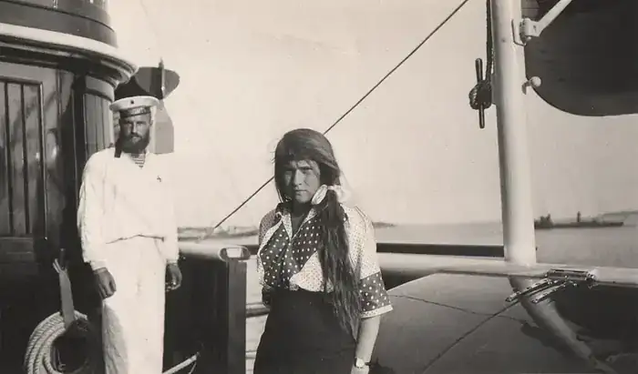
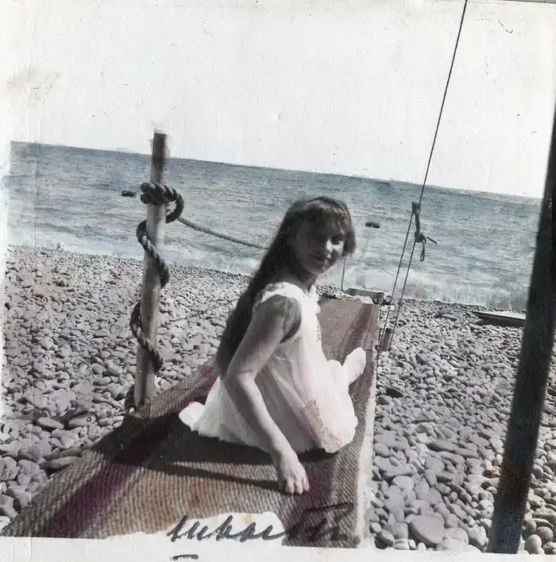
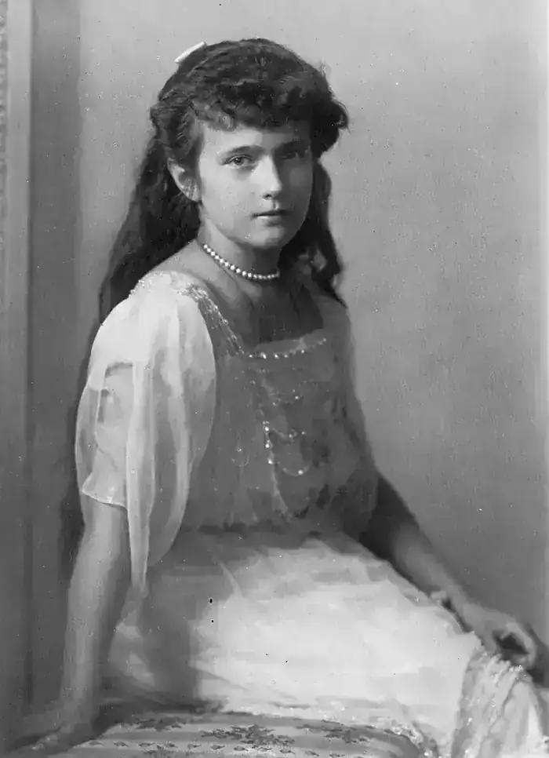

The execution
In the early hours of 17 July 1918, Nicholas II, Alexandra, their five children and four servants were shot in the cellar of the Ipatiev House in Yekaterinburg. The bodies were taken to a mineshaft, then moved and buried under railway sleepers. The Soviet state admitted the execution but never disclosed the burial site.
Maps, diagrams and images






That gap — an official story with no graves — is what made the survival stories possible. For seventy years, "the remains were never found" was literally true.
Anna Anderson
In 1920 a woman was pulled from a Berlin canal and admitted to an asylum. She eventually claimed to be Grand Duchess Anastasia, and spent the rest of her life in litigation and publicity, supported by some Romanov relatives and rejected by others. She died in 1984.
Her case was always weak on specifics: she spoke no Russian, her knowledge of the family was patchy, and her account changed. But she had a remarkable resemblance, and the absence of graves meant nothing could be checked.
The graves were found in 1991. Nine sets of remains were excavated near Yekaterinburg and identified through dental work, bone measurements and DNA. Two bodies were missing — Alexei and one daughter — which kept the story alive for another sixteen years.
Anna Anderson was not a Romanov. In 1994 mitochondrial DNA from a tissue sample was compared with Prince Philip, a great-nephew of Alexandra, and with the remains: she did not match. She was later linked to a Polish factory worker, Franziska Schanzkowska.
The missing two were found in 2007. A second burial site produced the remains of Alexei and a daughter, identified by DNA. All seven family members are now accounted for.
Why the story still circulates
Because it is a good story about escape, and because the Soviet state's secrecy gave it decades of oxygen. It also attaches to something real: several impostors did emerge, and some were believed by people who wanted the family to have survived.
The archive's interest is in the method. This is a case where a claim was not defeated by argument but by identification — the same kind of closure that the Hitler escape story resists, and that phantom time cannot accept at all.
Sources for this page
- Wikipedia, “Grand Duchess Anastasia Nikolaevna of Russia” — execution, impostors, DNAen.wikipedia.org
- PNAS (1994), mtDNA identification of the Romanov remainspnas.org
- Wikipedia, “Anna Anderson” — the claim and the genetic resulten.wikipedia.org
Open resources on this topic
- PapersOpen-access articles: DOAJ · PubMed Central · Internet Archive Scholar
- BooksPublic-domain and borrowable copies: Open Library · Project Gutenberg · Google Books · Internet Archive
Cite this page
Momin, S. (2026). Did Anastasia Survive?. The Larger World Archive. https://drsamonline.github.io/LARGE_GLOBE/anastasia.htmlMomin, Sohil. “Did Anastasia Survive?.” The Larger World Archive, 2026, https://drsamonline.github.io/LARGE_GLOBE/anastasia.html.Momin, Sohil. “Did Anastasia Survive?.” The Larger World Archive, 2026. https://drsamonline.github.io/LARGE_GLOBE/anastasia.html.@misc{did2026anastasia,
author = {Momin, Sohil},
title = {Did Anastasia Survive?},
year = {2026},
howpublished = {The Larger World Archive},
url = {https://drsamonline.github.io/LARGE_GLOBE/anastasia.html},
note = {Last reviewed 20 November 2026}
}Last reviewed 20 November 2026 · Corrections policy · this page is not peer reviewed